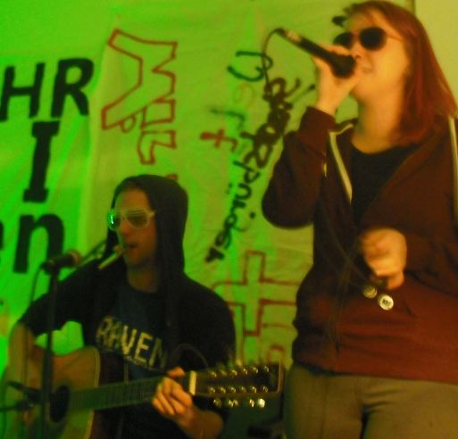

Schon im April 1920 sprach Julius Streicher, der spätere Gauleiter Frankens, auf einer Veranstaltung der Deutsch-Sozialistischen Partei in Gunzenhausen. Im Januar 1923 entstand die NSDAP-Ortsgruppe. Im Stadtrat von Gunzenhausen saßen schon 1924 Nationalsozialisten. Schon in den 20er Jahren gab es erste antijüdische Ausschreitungen. 1928 wurden Fenster der Synagoge eingeschlagen, im Dezember 1929 wurden 18 Grabsteine auf dem jüdischen Friedhof umgestürzt und teilweise zertrümmert. Im Februar dieses Jahres wurde ein jüdischer Lehrer am städtischen Gymnasium durch eine seiner Schülerinnen – mit Unterstützung der nationalsozialistischen Zeitung „Der Stürmer“ – beschuldigt, die christliche Religion verunglimpft zu haben. Die Sache kam vor Gericht, wo noch einigermaßen rechtsstaatlich geurteilt wurde. Der Lehrer wurde freigesprochen und dem Redakteur des „Stürmers“ eine Geldstrafe auferlegt.
Ende der 20er Jahre existierten drei jüdische Bankhäuser in Gunzenhausen. Es gab eine jüdische Gastwirtschaft und ein Kaffeehaus. Zwei jüdische Ärzte praktizieren, ein Allgemeinarzt und ein Zahnarzt. Überwiegend waren Juden Handeltreibende, selten Handwerker. Der Rabbi kam aus Ansbach und betreute die Gemeinde mit. In dem Haus am Hafnermarkt 13 befand sich eine Mikwe (Ritualbad). Seit 1928 war Hans Appler Führer der Ortsgruppe Gunzenhausen der NSDAP. …
Der ganze Beitrag findet sich hier. Der Autor macht darauf aufmerksam, dass der Beitrag bzw. die Materialsammlung stetig erweitert wird. Daher wird hier im Wesentlichen nur auf seine Seite verlinkt.
„Kriegsverbrechen: Warum Bürgstadt 1980 im Fokus stand“ titelt heute der Bote vom Untermain bzw. das Main-Echo. Dies ist insoweit völlig falsch, als Ernst Heinrichsohn, um den es heir geht und der damals Bürgermeister Bürgstadts und Rechtsanwalt in Miltenberg war, keine Kriegsverbrechen zur Last gelegt worden waren, sondern die Mitwirkung am Massenmord an den französischen Jüdinnen und Juden!
Wir stellen fest: Es gibt sehr wohl andere, besser sichtbare, nicht im Gehweg versteckte und auch mit mehr erläuterndem Text versehene Möglichkeiten des Gedenkens. In Augenhöhe.
Anlässlich der dezentralen Blockupy-Aktionstage kam es im Mai 2014 auch in Aschaffenburg zu vielfältigen Aktivitäten. Diese werden nun in einer Dokumentation festgehalten. Dazu gibt es noch drei Diskussionsbeiträge, zwei davon aus dem Umfeld von kommunal, konkret von Martin Bayer und Spacestachel.
Zum Aufrufen der Dokumentation (PDF) bitte auf die abgebildete Titelseite klicken:
Michaela Voll, die neue Sozialarbeiterin des Miltenberger Jugendzentrums „ThirTeen“ war durchgehend beschäftigt beim Abschiedskonzert für ihren Vorgänger Simon Schuster. Die zahlreichen Gäste und die Auftretenden hielten die junge Sozialpädagogin auf Trab. Dennoch oder gerade deshalb: Michaela Voll ist sehr zufrieden mit ihrem ersten Konzertabend im „ThirTeen“; und Simon Schuster konnte für sich festhalten: Die zwei Jahre, in denen er das neue Jugendzentrum (JUZ) in Miltenberg aufbaute, haben bleibende Spuren hinterlassen und werden als grundlegend für die weitere Entwicklung des Treffpunktes gesehen, der vom Caritasverband geführt und durch die Stadt Miltenberg finanziert wird.

Bereits im ersten Teil des Abends ging Caritas-Mitarbeiter Martin Pechtold in einer Ansprache auf die Verdienste von Simon Schuster ein. Er bezeichnete es in seinen humorigen Ausführungen als „an ein Wunder grenzend“, dass „Miltenberg nach `nur´ ca. 38 Jahren Jugendhausbewegung dann doch noch einen Sozialarbeiter für die offene Jugendarbeit bekam“. (mehr…)
Am 27. Januar 2014 erschien auf hagalil.com eine Besprechung des Buches „Bürokratie und Verbrechen. Antisemitische Finanzpolitik und Verwaltungspraxis im nationalsozialistischen Deutschland“ von Christiane Kuller (Oldenbourg Verlag München 2013, Euro 39,80). In diesem Buch wird gefragt, „in welcher Form ein weitverzweigter Apparat wie die Finanzverwaltung in die Verfolgung, Vertreibung und Vernichtung eingebunden werden konnte“ (so die Buchbesprechung). Titel der Rezension: „Die Geschichte von Frau Mira Marx – oder `Tatort Finanzamt´“. Diese Besprechung von Orlando Berliner und Susanne Benöhr-Laqueur zitiert mehrfach den Beitrag „Tatort Miltenberg“, der auf kommunal veröffentlicht ist. Wir erlauben uns, aus dieser Buchbesprechung mehrere Stellen, die sich vor allem mit der Miltenberger Jüdin Mira Marx beschäftigen, zu zitieren:
Auf dem Cover des Buches befindet sich das Foto einer ca. vierzig Jahre alten Frau. Sie scheint soeben aus der hinteren Tür eines Omnibusses ausgestiegen zu sein. An der Fahrerseite des Buses ist deutlich sichtbar ein Wimpel mit einem Davidstein angebracht. (mehr…)
„Wo gab es früher Synagogen zwischen Aschaffenburg und Miltenberg? Wo gibt es heute noch jüdische Friedhöfe in unserer Gegend? Antworten auf diese Fragen erhalten Interessierte am Abend des 9. November. An diesem Tag jähren sich die von den Nationalsozialisten im Deutschen Reich veranlassten Judenpogrome zum 75. Mal. (mehr…)
Nachdem wir uns durch Youtube gequält haben, nachdem uns die Klappspaten dort immer einen völlig falschen Account angezeigt haben, nachdem KBF Revolte schon nicht mehr existiert, nachdem Mapec den KBF-Clip nicht mehr zur Verfügung hat (da er sich sinnvollerweise von Youtube abmeldete), nach alle dem zeigen wir ihn, den Auftritt der Miltenberger Electro-Punk-Band aus 2012. Bitteschön!
Im Jahr 2012 machten nicht nur diverse extrem rechte Aktionen am bayerischen Untermain von sich reden; es wurde auch bekannt, dass zwei Nazi-Terroristen in den neunzigern in Aschaffenburg bei mindestens einer Demonstration aufgetaucht waren. (mehr…)
Kommunal: Zahlreiche so genannte K-Gruppen, sie selber bezeichneten sich eher als marxistisch-leninistisch, also als ML-Organisationen, waren am bayerischen Untermain aktiv. Als letzte besteht heute noch die MLPD, die Nachfolgerin des Kommunistischen Arbeiterbundes Deutschlands, KABD. Mit dieser Organisation konntest Du längere Erfahrungen sammeln. Wie kam es dazu? Wie kamst Du zu dieser Gruppe? (mehr…)
Interview mit Johannes Büttner zu den Anfängen der linken und alternativen Bewegung am bayerischen Untermain
Kommunal: Johannes Büttner, heute Stadtrat der Kommunalen Initiative in Aschaffenburg, im Laufe der letzten Jahrzehnte bei einer sicherlich nicht mehr zählbaren Anzahl von Demonstrationen, Aktionen, Kundgebungen, Initiativen dabei gewesen, irgendwie überall, wo links oder radikal-demokratisch was los war – dieser Johannes Büttner war auch schon ganz am Anfang dabei, als es los ging mit der linken Bewegung am bayerischen Untermain. Und so haben wir ihn gebeten, uns ein Interview hierzu zu geben.
Ja, wie ging es denn eigentlich los? Was stand ganz am Anfang der linken Bewegung, der Achtundsechziger am Untermain? (mehr…)
9. November in Aschaffenburg: Der Behelfskabarettist Paul Panzer – in ekliger Selbstüberschätzung nach einem Lied von Ton Steine Scherben benannt – kaspert herum. Im ColosSaal gibt es „Gitarrenzauber“ von einem Musiker, der sich gibt wie die Provinzausgabe von Slash (Guns N´ Roses). Und irgendwer versucht, an den 9. November 1938 zu erinnern. Nicht anders ist es in Miltenberg. Aber immerhin: Es erinnert sich noch jemand. (mehr…)
Suche
Du browst gerade in den Weblog-Archiven nach der Kategorie 'BEITRÄGE'.